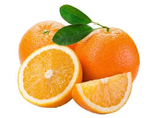

tentangbuah.com
Jeruk

Jeruk merupakan sebuah buah yang memiliki khasiat. Jeruk yang merupakan buah sitrus
memiliki
banyak kandungan vitamin C dan anti oksidan, yang meningkatkan sistem kekebalan tubuh dan membantu
melawan
infeksi dan flu. Kandungan phytochemicals dapat mencegah beberapa penyakit kanker. Walau
tinggi
gula,
indeksi glikemik buah jeruk tergolong rendah, yakni berkisar 31-51. Makanan dengan rendah indeksi
glikemik
dikaitkan dengan berbagai manfaat kesehatan.
Jeruk sebagian besar tersusun atas karbohidrat dan air, dengan sangat sedikit lemak dan
protein.
Karbohidrat pada jeruk sebagian besar berupa gula sederhana, seperti sukrosa, fruktosa, dan glukosa.
Gula
inilah
yang memberikan rasa manis pada buah jeruk. Selain zat gizi makro dan mikro di atas, jeruk juga
mengantongi
beragam senyawa tumbuhan. Senyawa tumbuhan pada buah jeruk utamanya terbagi atas dua golongan, yaitu
golongan
fenolik dan karotenoid.
Baik fenolik maupun karotenoid sama-sama memiliki sifat antioksidan yang berperan dalam pengendalian
radikal
bebas. Beberapa contoh senyawa fenolik yaitu hesperidin dan antosianin, dan contoh dari karotenoid
yaitu
likopen dan beta-cryptoxanthin.
Khasiat Jeruk
- Memelihara kesehatan jantung
- Mencegah anemia
- Mengendalikan tekanan darah
- Mencegah batu ginjal
- Berpotensi untuk menurunkan resiko Diabetes
- Menjaga kesahatan kulit
Daftar Harga
| Jenis Jeruk | Harga | |
|---|---|---|
| Per Kilo | Per Biji | |
| Jeruk Lemon | 60.000 | 6.000 |
| Jeruk Bali | 70.000 | 7.000 |
| Jeruk Local | 55.000 | 5.500 |
Menuju Ke SubJudul